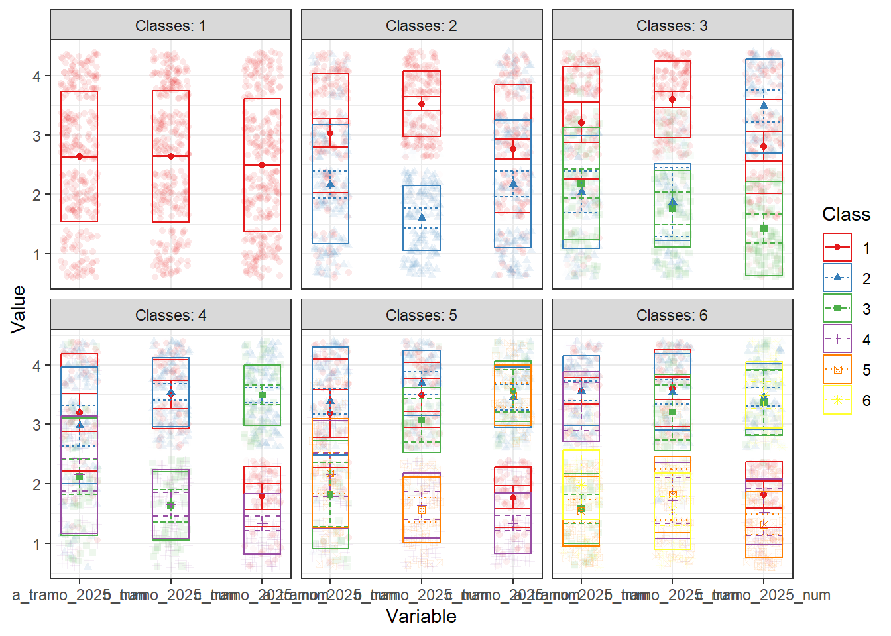
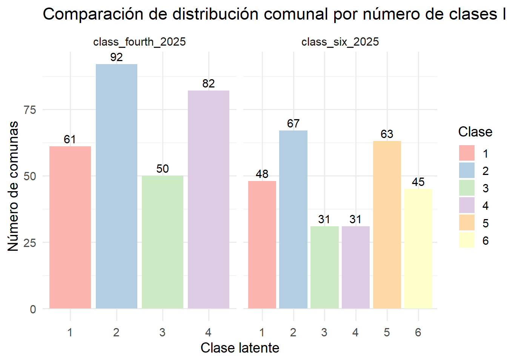
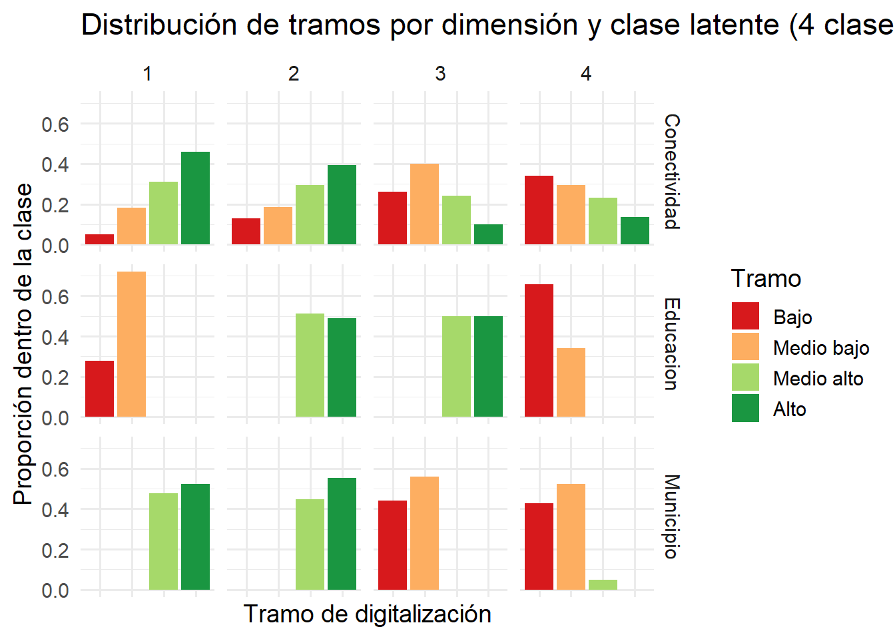
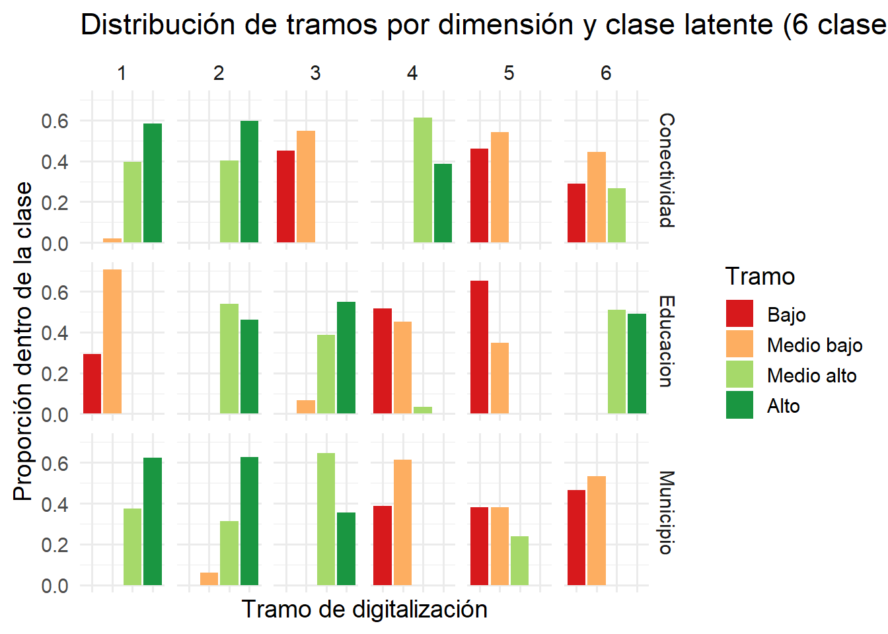
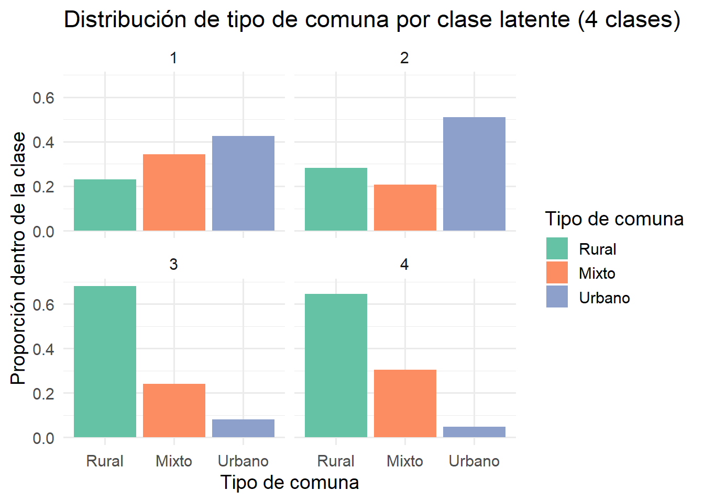
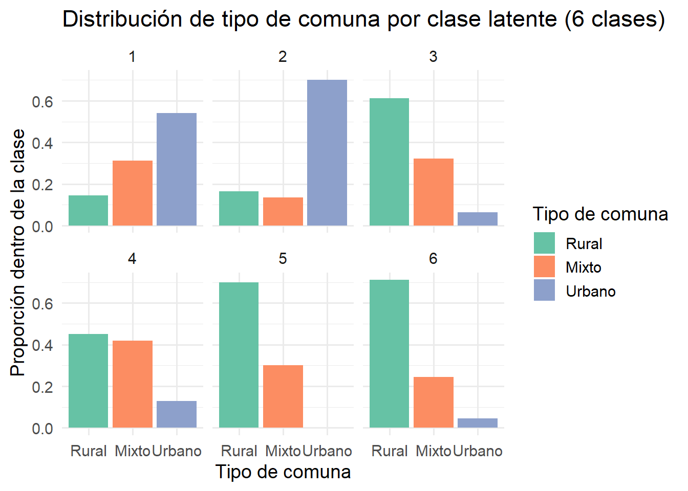
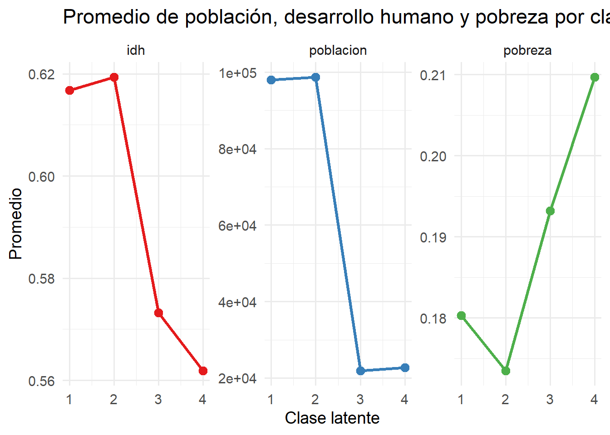
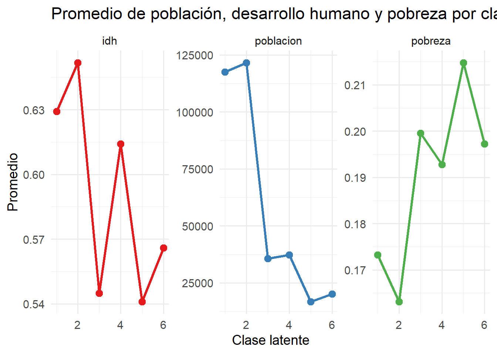

idc <- readRDS(here::here("data/proc_data/public_data/2025_idc_v2.rds"))
pacman::p_load(
#Procesamiento de datos
tidyverse,
#LPA
tidyLPA,
#Visualizaciones
ggplot2,
#Markdown
knitr, kableExtra
)
paleta_colores <- c("#7F797E", "#E83755", "#5E585C")
idc <- idc %>%
mutate(
comuna = haven::as_factor(comuna), # comuna como factor (nombres)
region = haven::as_factor(region), # región como factor (etiquetas)
idc_2025 = as.numeric(haven::zap_labels(idc_2025)) # asegurar numérico limpio
)latent-analysis
Preparación
#Select range variables
idc_lpa_2025 <- idc %>%
dplyr::select(a_tramo_2025, b_tramo_2025, c_tramo_2025)%>%
filter(complete.cases(a_tramo_2025, b_tramo_2025, c_tramo_2025))
#Convertir etiquetas a numéricos para correr el modelo
idc_lpa_2025 <- idc_lpa_2025 %>%
mutate(
a_tramo_2025_num = as.numeric(factor(a_tramo_2025,
levels = c("Bajo", "Medio bajo", "Medio alto", "Alto"))),
b_tramo_2025_num = as.numeric(factor(b_tramo_2025,
levels = c("Bajo", "Medio bajo", "Medio alto", "Alto"))),
c_tramo_2025_num = as.numeric(factor(c_tramo_2025,
levels = c("Bajo", "Medio bajo", "Medio alto", "Alto")))
)Comparar soluciones
#LPA estimation
results_lpa_2025 <- idc_lpa_2025 %>%
select(a_tramo_2025_num, b_tramo_2025_num, c_tramo_2025_num) %>%
estimate_profiles(1:6, # número de clases a probar (puedes ajustar)
models = 1) %>% # modelo 1 = varianzas iguales, sin covarianzas
compare_solutions(statistics = c("AIC", "BIC", "Entropy"))The 'variances'/'covariances' arguments were ignored in favor of the 'models' argument.Warning: The solution with the maximum number of classes under consideration
was considered to be the best solution according to one or more fit indices.
Examine your results with care and consider estimating more classes.results_lpa_2025Compare tidyLPA solutions:
Model Classes AIC BIC Entropy
1 1 2603.073 2624.988 1.000
1 2 2484.898 2521.422 0.865
1 3 2477.944 2529.079 0.754
1 4 2421.250 2486.995 0.865
1 5 2416.119 2496.473 0.833
1 6 2401.983 2496.947 0.823
Best model according to AIC is Model 1 with 6 classes.
Best model according to BIC is Model 1 with 4 classes.
Best model according to Entropy is Model NA with NA classes.
An analytic hierarchy process, based on the fit indices AIC, AWE, BIC, CLC, and KIC (Akogul & Erisoglu, 2017), suggests the best solution is Model 1 with 6 classes.Visualizar perfiles
idc_lpa_2025%>%
select(a_tramo_2025_num, b_tramo_2025_num, c_tramo_2025_num) %>%
estimate_profiles(1:6, # número de clases a probar (puedes ajustar)
models = 1)%>%
plot_profiles()The 'variances'/'covariances' arguments were ignored in favor of the 'models' argument.Warning: `aes_string()` was deprecated in ggplot2 3.0.0.
ℹ Please use tidy evaluation idioms with `aes()`.
ℹ See also `vignette("ggplot2-in-packages")` for more information.
ℹ The deprecated feature was likely used in the tidyLPA package.
Please report the issue at <https://github.com/data-edu/tidyLPA/issues>.
Descriptivos
idc_profile_2025_4 <- idc_lpa_2025%>%
select(a_tramo_2025_num, b_tramo_2025_num, c_tramo_2025_num)%>%
single_imputation()%>%
estimate_profiles(4, models = 1)%>%
get_data()The 'variances'/'covariances' arguments were ignored in favor of the 'models' argument.idc_lpa <- idc %>%
filter(complete.cases(a_tramo_2025, b_tramo_2025, c_tramo_2025)) %>%
bind_cols(idc_profile_2025_4 %>% select(class_fourth_2025=Class))
idc_profile_2025_6 <- idc_lpa_2025%>%
select(a_tramo_2025_num, b_tramo_2025_num, c_tramo_2025_num)%>%
single_imputation()%>%
estimate_profiles(6, models = 1)%>%
get_data()The 'variances'/'covariances' arguments were ignored in favor of the 'models' argument.idc_lpa <- idc_lpa %>%
bind_cols(idc_profile_2025_6 %>% select(class_six_2025=Class))%>%
mutate(
Conectividad=a_tramo_2025,
Municipio=b_tramo_2025,
Educacion=c_tramo_2025
)Cantidad de comunas por clase
idc_lpa %>%
summarise(
class_fourth_2025 = as.factor(class_fourth_2025),
class_six_2025 = as.factor(class_six_2025)
) %>%
pivot_longer(
cols = starts_with("class_"),
names_to = "modelo",
values_to = "clase"
) %>%
count(modelo, clase) %>%
ggplot(aes(x = clase, y = n, fill = clase)) +
geom_col() +
geom_text(aes(label = n), vjust = -0.4, size = 4) +
facet_wrap(~modelo, scales = "free_x") +
scale_fill_brewer(palette = "Pastel1") +
labs(
title = "Comparación de distribución comunal por número de clases latentes",
x = "Clase latente",
y = "Número de comunas",
fill = "Clase"
) +
theme_minimal(base_size = 14)Warning: Returning more (or less) than 1 row per `summarise()` group was deprecated in
dplyr 1.1.0.
ℹ Please use `reframe()` instead.
ℹ When switching from `summarise()` to `reframe()`, remember that `reframe()`
always returns an ungrouped data frame and adjust accordingly.
Frecuencia por subdimensiones
library(dplyr)
library(ggplot2)
library(tidyr)
# Definir los niveles en orden deseado
orden_tramos <- c("Bajo", "Medio bajo", "Medio alto", "Alto")
# Reorganizar la base
tabla_4 <- idc_lpa %>%
select(class_fourth_2025, Conectividad, Municipio, Educacion) %>%
pivot_longer(
cols = c(Conectividad, Municipio, Educacion),
names_to = "dimension",
values_to = "tramo"
) %>%
group_by(class_fourth_2025, dimension, tramo) %>%
summarise(n = n(), .groups = "drop_last") %>%
mutate(
prop = n / sum(n),
tramo = factor(tramo, levels = orden_tramos, ordered = TRUE) # <-- aquí
) %>%
ungroup()
# Gráfico
ggplot(tabla_4, aes(x = tramo, y = prop, fill = tramo)) +
geom_col(position = "stack") +
facet_grid(dimension ~ class_fourth_2025) +
scale_fill_brewer(palette = "RdYlGn", direction = 1) +
labs(
title = "Distribución de tramos por dimensión y clase latente (4 clases)",
x = "Tramo de digitalización",
y = "Proporción dentro de la clase",
fill = "Tramo"
) +
theme_minimal(base_size = 14) +
theme(axis.text.x = element_blank())
# Definir los niveles en orden deseado
orden_tramos <- c("Bajo", "Medio bajo", "Medio alto", "Alto")
# Reorganizar la base
tabla_6 <- idc_lpa %>%
select(class_six_2025, Conectividad, Municipio, Educacion) %>%
pivot_longer(
cols = c(Conectividad, Municipio, Educacion),
names_to = "dimension",
values_to = "tramo"
) %>%
group_by(class_six_2025, dimension, tramo) %>%
summarise(n = n(), .groups = "drop_last") %>%
mutate(
prop = n / sum(n),
tramo = factor(tramo, levels = orden_tramos, ordered = TRUE) # <-- aquí
) %>%
ungroup()
# Gráfico
ggplot(tabla_6, aes(x = tramo, y = prop, fill = tramo)) +
geom_col(position = "stack") +
facet_grid(dimension ~ class_six_2025) +
scale_fill_brewer(palette = "RdYlGn", direction = 1) +
labs(
title = "Distribución de tramos por dimensión y clase latente (6 clases)",
x = "Tramo de digitalización",
y = "Proporción dentro de la clase",
fill = "Tramo"
) +
theme_minimal(base_size = 14) +
theme(axis.text.x = element_blank())
Cruce zona rural
# Cruzar clases latentes con tipo de comuna
tabla_tipo_4 <- idc_lpa %>%
select(class_fourth_2025, tipo_comuna) %>%
group_by(class_fourth_2025, tipo_comuna) %>%
summarise(n = n(), .groups = "drop_last") %>%
mutate(prop = n / sum(n)) %>%
ungroup()
# Convertir tipo_comuna en factor para ordenar si quieres
tabla_tipo_4$tipo_comuna <- factor(tabla_tipo_4$tipo_comuna, levels = c("Rural", "Mixto", "Urbano"))
# Gráfico
ggplot(tabla_tipo_4, aes(x = tipo_comuna, y = prop, fill = tipo_comuna)) +
geom_col(position = "stack") +
facet_wrap(~ class_fourth_2025) +
scale_fill_brewer(palette = "Set2") +
labs(
title = "Distribución de tipo de comuna por clase latente (4 clases)",
x = "Tipo de comuna",
y = "Proporción dentro de la clase",
fill = "Tipo de comuna"
) +
theme_minimal(base_size = 14)
# Cruzar clases latentes con tipo de comuna
tabla_tipo_6 <- idc_lpa %>%
select(class_six_2025, tipo_comuna) %>%
group_by(class_six_2025, tipo_comuna) %>%
summarise(n = n(), .groups = "drop_last") %>%
mutate(prop = n / sum(n)) %>%
ungroup()
# Convertir tipo_comuna en factor
tabla_tipo_6$tipo_comuna <- factor(tabla_tipo_6$tipo_comuna, levels = c("Rural", "Mixto", "Urbano"))
# Gráfico
ggplot(tabla_tipo_6, aes(x = tipo_comuna, y = prop, fill = tipo_comuna)) +
geom_col(position = "stack") +
facet_wrap(~ class_six_2025) +
scale_fill_brewer(palette = "Set2") +
labs(
title = "Distribución de tipo de comuna por clase latente (6 clases)",
x = "Tipo de comuna",
y = "Proporción dentro de la clase",
fill = "Tipo de comuna"
) +
theme_minimal(base_size = 14)
Cruce por macrozona
Índices comunales
# Promedios por clase (4 clases)
tabla_num_4 <- idc_lpa %>%
select(class_fourth_2025, idh_2023, pobreza_2022, poblacion_censo_2024) %>%
group_by(class_fourth_2025) %>%
summarise(
idh = mean(idh_2023, na.rm = TRUE),
pobreza = mean(pobreza_2022, na.rm = TRUE),
poblacion = mean(poblacion_censo_2024, na.rm = TRUE),
.groups = "drop"
) %>%
pivot_longer(cols = c(idh, pobreza, poblacion), names_to = "variable", values_to = "promedio")
ggplot(tabla_num_4, aes(x = class_fourth_2025, y = promedio, color = variable, group = variable)) +
geom_line(size = 1.2) +
geom_point(size = 3) +
facet_wrap(~ variable, scales = "free_y") + # eje independiente por variable
scale_color_brewer(palette = "Set1") +
labs(
title = "Promedio de población, desarrollo humano y pobreza por clase (4 clases)",
x = "Clase latente",
y = "Promedio",
color = "Variable"
) +
theme_minimal(base_size = 14) +
theme(legend.position = "none") # opcional, porque cada panel ya está etiquetadoWarning: Using `size` aesthetic for lines was deprecated in ggplot2 3.4.0.
ℹ Please use `linewidth` instead.
# Promedios por clase (6 clases)
tabla_num_6 <- idc_lpa %>%
select(class_six_2025, idh_2023, pobreza_2022, poblacion_censo_2024) %>%
group_by(class_six_2025) %>%
summarise(
idh = mean(idh_2023, na.rm = TRUE),
pobreza = mean(pobreza_2022, na.rm = TRUE),
poblacion = mean(poblacion_censo_2024, na.rm = TRUE),
.groups = "drop"
) %>%
pivot_longer(cols = c(idh, pobreza, poblacion), names_to = "variable", values_to = "promedio")
ggplot(tabla_num_6, aes(x = class_six_2025, y = promedio, color = variable, group = variable)) +
geom_line(size = 1.2) +
geom_point(size = 3) +
facet_wrap(~ variable, scales = "free_y") +
scale_color_brewer(palette = "Set1") +
labs(
title = "Promedio de población, desarrollo humano y pobreza por clase (6 clases)",
x = "Clase latente",
y = "Promedio",
color = "Variable"
) +
theme_minimal(base_size = 14) +
theme(legend.position = "none")